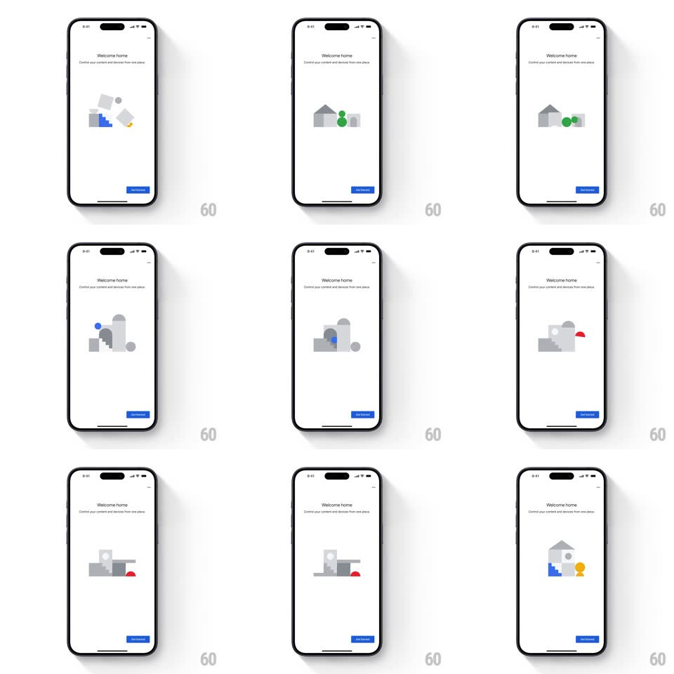

Media
Frame-by-frame

Rebuild this interaction 1:1: Google Home's welcome illustration - a looping geometric composition above the "Welcome home" headline where flat shapes assemble into a little house with stairs and furniture, then scatter and reassemble into new arrangements, with one Google-colored accent (blue, green, yellow, red) lighting up per arrangement.

Rebuild this interaction 1:1: Google Home's welcome illustration - a looping geometric composition above the "Welcome home" headline where flat shapes assemble into a little house with stairs and furniture, then scatter and reassemble into new arrangements, with one Google-colored accent (blue, green, yellow, red) lighting up per arrangement. ## Integration Integration: stack-agnostic spec - springs given as stiffness/damping, timed motions as duration + curve; map every value to your framework and animation library of choice. ## Scene White onboarding page: "Welcome home" headline, "Control your content and devices from one place" subline, centered illustration made of simple geometric blocks (squares, circles, triangles, half-discs, an arch "house" shape), blue "Get started" button bottom-right. ## Motion spec Pattern: assembling / disassembling geometric loop. - The loop (~5s): blocks fly in from loose scatter positions and snap into a coherent scene (house with roof, blue staircase, lamp, vase), hold ~1.2s, then break apart and reassemble into the next arrangement (shelf, plant stand, abstract stack). - Each block moves on its own short spring (stiffness ~320, damping ~24, 450ms) with 40-80ms staggers, so assembly reads as a cascade, not a group move. - One accent element per arrangement renders in a full Google color (blue stairs, green plant, yellow lamp, red cushion) while the rest stay light grey; the accent crossfades when the scene changes. - Small rotation drift on scattered blocks (+/-15deg) sells the "toy blocks" feel. ## Calibration - Blocks never fade - they are always on stage, only rearranging. - Assembly lands with a subtle collective settle (whole cluster translateY -3px -> 0, 200ms). ## Reduced motion Scenes crossfade between static arrangements (400ms). ## Don't miss - The grey is near-white with soft inner shading - blocks read as paper, not wireframes. - Exactly one colored accent per arrangement; it moves to a different object each scene.